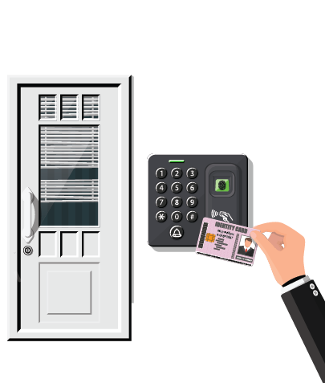

Imagine a theater hall with a seating capacity of 100 people
Imagine a high-security office building where access is controlled through ID cards. Each employee has a
unique ID card with a specific number, which they use to swipe through security gates. The security system
relies on these ID numbers to verify who is entering or leaving the building, granting access based on the
legitimacy of the ID presented.
Now, envision a scenario where someone, intending to gain unauthorized access, creates a counterfeit ID
card. This fake ID replicates the number of a legitimate employee’s card. When this person uses the
counterfeit ID at the security gate, the system checks the ID number, recognizes it as valid (although
it's a duplicate), and grants access. To the system, it appears as if the legitimate employee is entering,
but in reality, it's an imposter.
MAC Spoofing Attack